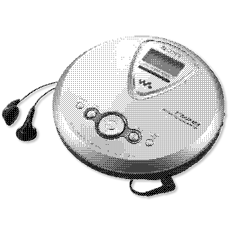
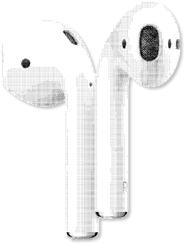
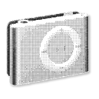
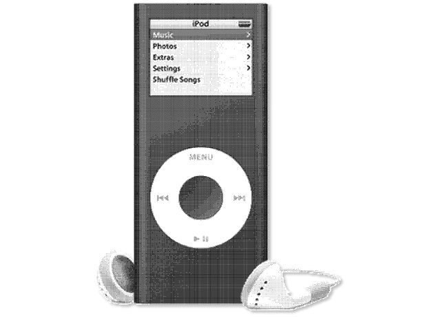
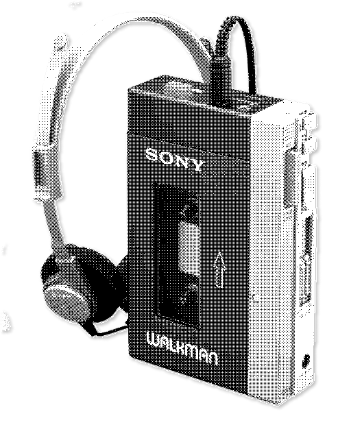
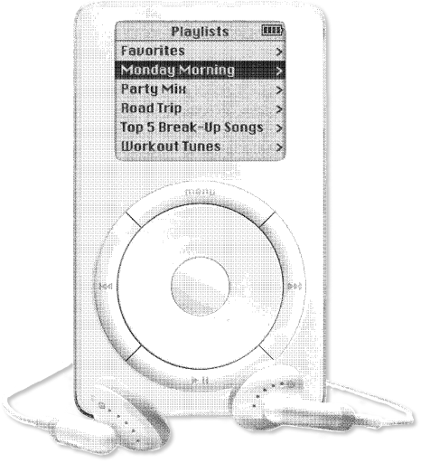
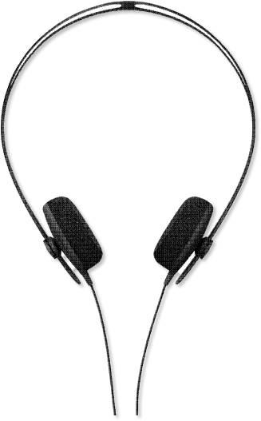
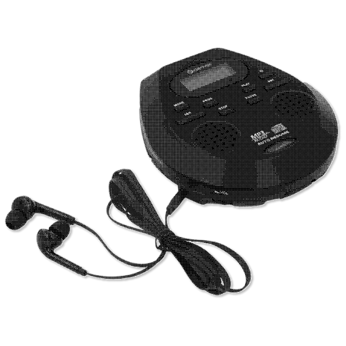

Click on the bubbles to burst them and hear the sounds played by different personal listening devices. Try mixing just few tracks or create the most unbearable cacophony by bursting all the bubbles.








What if we bring all the sounds from our private sonic bubbles to the public soundscape? What kind of noise would our personal soundtracks create?